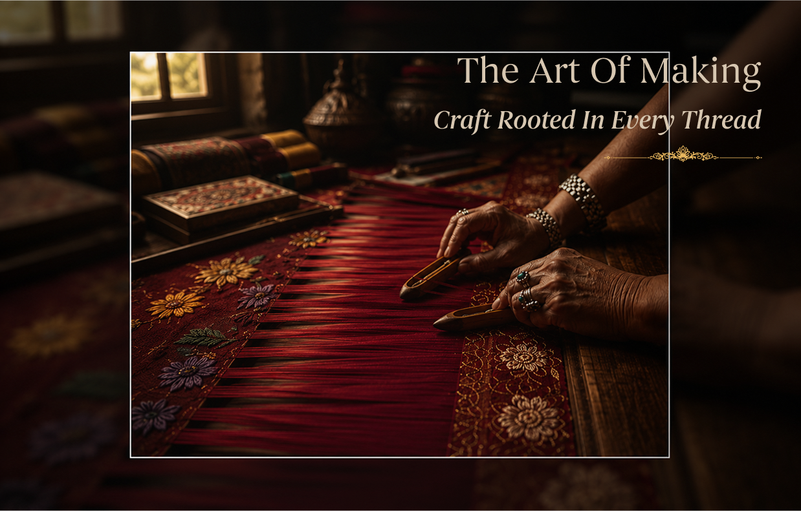
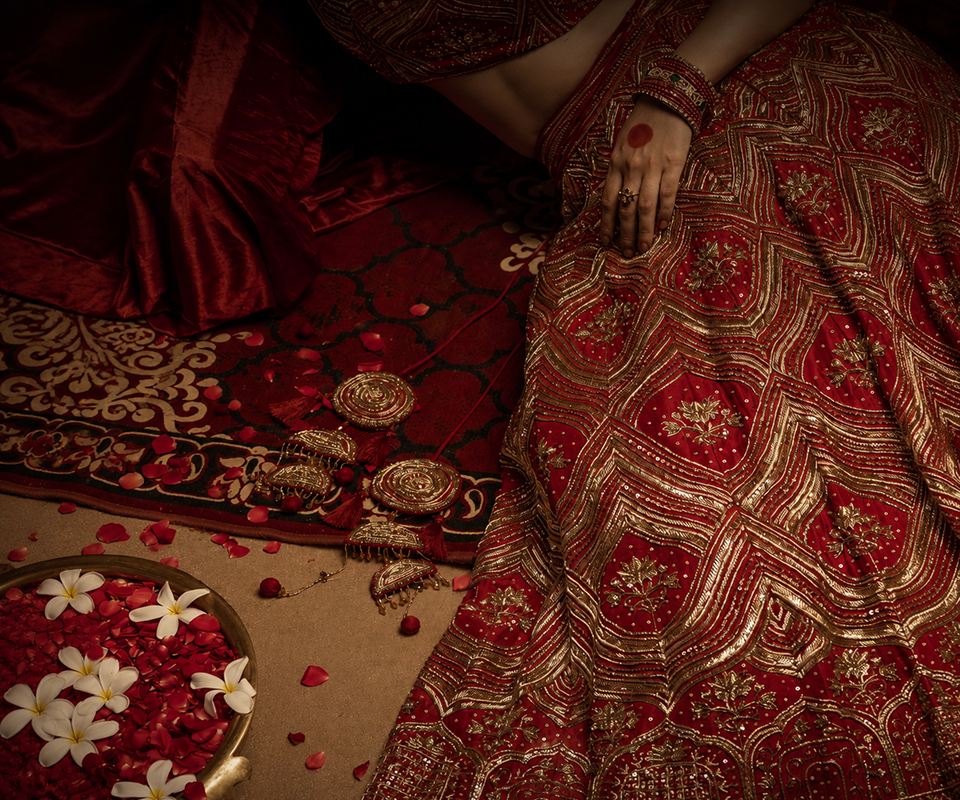
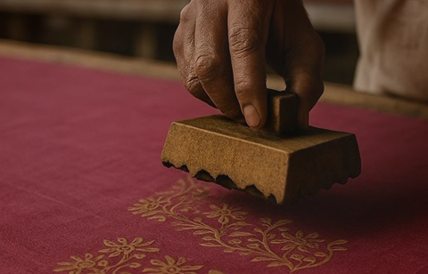

The Story
Of sanskriti
Rooted in heritage and shaped through craftsmanship, Sanskriti celebrates timeless Indian artistry through ceremonial drapes, handwoven textiles, and contemporary expressions inspired by tradition.

The Art Of Making
Craft Rooted In Every Thread
Every creation at Sanskriti begins with a deep respect for India's textile heritage. From handwoven Banarasi narratives to intricate Jamdani patterns and ceremonial embroidery, each piece is shaped through traditions carried across generations of artisans.
We work closely with skilled craftspeople whose techniques preserve the spirit of heritage dressing. Through weaving, zari work, hand finishing, and thoughtful detailing, every creation becomes more than attire — it becomes a story woven with memory, devotion, and timeless artistry.
Impressions
of Heritage Rooted in Craft
At Sanskriti, heritage lives through detail — in every weave, every motif, and every ceremonial silhouette shaped through generations of artistry. Our philosophy is rooted in preserving India's textile traditions while creating timeless expressions designed for modern celebrations.
We believe craftsmanship carries memory. Through handwoven textiles, artisanal techniques, and thoughtful creation, each piece becomes more than attire — it becomes a continuation of culture, ritual, and story.


Crafted Through Legacy
Discover the beauty of ceremonial dressing shaped through regal craftsmanship, contemporary elegance, and timeless Indian artistry.
Know moreA Note From The Founder
Sanskriti was created with the belief that craftsmanship deserves to remain part of everyday life. Every weave carries history, every motif holds memory, and every collection becomes a bridge between the past and the present.
Our vision is to preserve India's rich textile artistry while creating pieces that continue these stories for future generations.
Anjali Mehra
Founder, Sanskriti Boutique